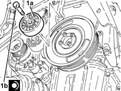

1092G21 engine component single belt fixed tensioner - r rwith belt removed
Path
Procedures > 10 ENGINE > 1092 VARIOUS ENGINE COMPONENT CONTROLS > 1092G single drive belt for various engine components > 1092G21 engine component single belt fixed tensioner - r rwith belt removed
Kind
repair procedure (removal / refitting; the operation number is the code)
Applies to
engines: 1.9 JTD 16v, 2.4 JTD 20v; all production periods
1. Place the engine components single drive belt fixed tensioner
(1a) back in its housing and fix it tightening the bolt (1b) to
the recommended torque.
Fastening
Component
Ø
Value
(daNm)
1b
Bolt
FIXED SINGLE SERVICE BELT TENSIONER
M10
4.5 ÷ 5.5

Applies to: engines: 2.4 JTD 20v; all production periods
1016C10 cylinder head - r + r and replace gasketrepair procedure (removal / refitting; the operation number is the code) · engines: 1.6 TS , 1.8 TS, 2.0 JTS, 1.9 JTD 8v , 1.9 JTD 16v, 2.0 JTS, 2.4 JTD 10v, 2.4 JTD 20v; all production periods
1028H10 connecting rod and piston set - r rrepair procedure (removal / refitting; the operation number is the code) · engines: 1.6 TS , 1.8 TS, 2.0 JTS, 1.9 JTD 8v , 1.9 JTD 16v, 2.0 JTS, 2.4 JTD 10v, 2.4 JTD 20v; all production periods
1032B46 toothed drive pulley - r + rrepair procedure (removal / refitting; the operation number is the code) · engines: 1.6 TS , 2.0 JTS, 1.9 JTD 8v , 1.9 JTD 16v, 2.0 JTS, 2.4 JTD 20v; all production periods
1032B52 toothed driven pulley (one) - r + rrepair procedure (removal / refitting; the operation number is the code) · engines: 1.6 TS , 1.8 TS, 2.0 JTS, 1.9 JTD 16v, 2.0 JTS, 2.4 JTD 20v; all production periods
1032B60 bolt pulley - r rrepair procedure (removal / refitting; the operation number is the code) · engines: 1.9 JTD 8v , 2.4 JTD 20v; all production periods
1032C32 fixed timing system tensioner (one) r + rrepair procedure (removal / refitting; the operation number is the code) · engines: 1.6 TS , 1.8 TS, 2.0 JTS, 2.5 V6, 3.2 V6, 1.9 JTD 16v, 2.0 JTS, 2.4 JTD 20v; all production periods
1032D12 timing system protective cover(s) - r + rrepair procedure (removal / refitting; the operation number is the code) · engines: 1.6 TS , 1.8 TS, 2.0 JTS, 2.5 V6, 3.2 V6, 1.9 JTD 8v , 1.9 JTD 16v, 2.0 JTS, 2.4 JTD 10v, 2.4 JTD 20v; all production periods
1036H57 hydraulic tappets all r rrepair procedure (removal / refitting; the operation number is the code) · engines: 2.4 JTD 20v; all production periods
1036L20 camshaft idler gears - replacerepair procedure (removal / refitting; the operation number is the code) · engines: 2.4 JTD 20v; all production periods
1060E10 pressure pump - r rrepair procedure (removal / refitting; the operation number is the code) · engines: 1.9 JTD 8v , 1.9 JTD 16v, 2.4 JTD 10v, 2.4 JTD 20v; all production periods
1060E30 pressure pump pulley - r rrepair procedure (removal / refitting; the operation number is the code) · engines: 1.9 JTD 8v , 1.9 JTD 16v, 2.4 JTD 10v, 2.4 JTD 20v; all production periods
1060E40 supplementary pressure pump - r rrepair procedure (removal / refitting; the operation number is the code) · engines: 1.9 JTD 8v , 1.9 JTD 16v, 2.4 JTD 10v, 2.4 JTD 20v; all production periods
1072B10 inlet manifold - r + r and replace sealrepair procedure (removal / refitting; the operation number is the code) · engines: 1.6 TS , 1.8 TS, 2.0 JTS, 1.9 JTD 16v, 2.0 JTS, 2.4 JTD 20v; all production periods
1088C10 water pump - r + rrepair procedure (removal / refitting; the operation number is the code) · engines: 1.6 TS , 1.8 TS, 2.0 JTS, 1.9 JTD 16v, 2.0 JTS, 2.4 JTD 20v; all production periods
1092G20 engine component single belt fixed tensioner - one - r + rrepair procedure (removal / refitting; the operation number is the code) · engines: 1.6 TS , 1.8 TS, 2.0 JTS, 2.5 V6, 3.2 V6, 1.9 JTD 8v , 1.9 JTD 16v, 2.0 JTS, 2.4 JTD 10v, 2.4 JTD 20v; all production periods
 Removing
Removing Refitting
Refitting